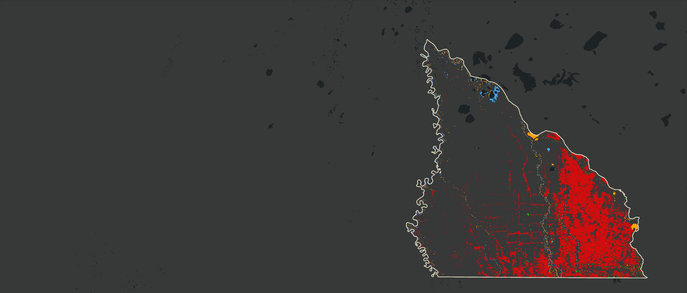
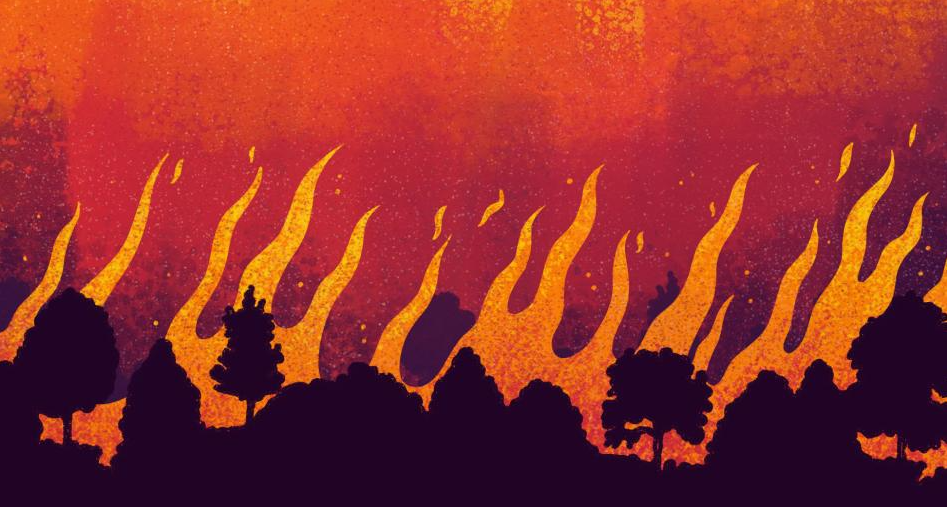
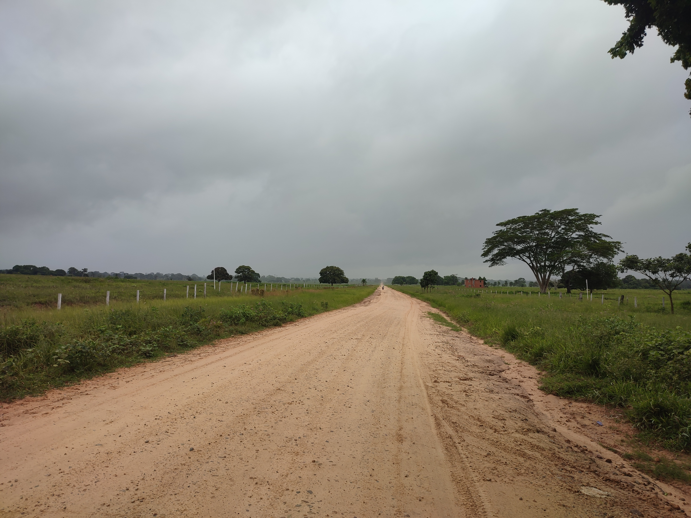

de bosque perdido entre 1985 y 2023

Reserva Forestal El Choré: 40 años de transformación
Una exploración visual con datos de MapBiomas Bolivia (1985–2023)
creció la superficie agrícola en cuatro décadas
corresponden al área protegida declarada en 2024
Antecedentes
Reserva Forestal El Choré
El Choré muestra un cambio progresivo del patrón de ocupación del suelo: la matriz forestal continua retrocede, mientras se expanden los usos agropecuarios, los caminos (aunque en mal estado) y los asentamientos en el sur y sureste del territorio, en dirreción noreste.
Ubicación
La Reserva Forestal El Choré se ubica en el sector noroeste del departamento de Santa Cruz, al norte de las provincias Sara e Ichilo, dentro de los municipios de Santa Rosa del Sara, San Juan y Yapacaní.
El Choré es la última gran mancha amazónica al norte de Santa Cruz. Con más 1,08 millones de hectáreas. Su continuidad territorial cumplía un papel clave en la regulación hídrica, la conectividad ecológica y el aprovechamiento forestal.
Linea de tiempo
El Choré fue creado mediante el Decreto Supremo N° 7779, del 3 de agosto de 1966, como reserva forestal por sus condiciones edáficas, ecológicas y climáticas predominantemente forestales. La superficie inicial registrada fue de aproximadamente 900.000 hectáreas.
1966
En 1969 se modificó el límite sur de la Reserva Forestal El Choré, desplazándolo del paralelo 17°05' Sur al paralelo 17°00' Sur.
1969
Mediante el Decreto Supremo N° 22899, del 16 de septiembre de 1991, la reserva se amplió hacia el sur en 180.000 hectáreas, al considerarse que esa franja presentaba las mismas condiciones forestales del área original. Con ello, la superficie aproximada alcanzó 1.080.000 hectáreas.
1991
El 21 de septiembre de 1995, mediante el Decreto Supremo N° 24124, se aprobó el Plan de Uso del Suelo del departamento de Santa Cruz. En El Choré, esta norma consolidó dos unidades de lectura territorial: B2, bosque de manejo sostenible (784.538 hectáreas, 77,8%), y AF, unidad agroforestal en el sector sureste (223.962 hectáreas, 22,2%) destinada al asentamiento de pequeños agricultores.
1995
Mediante el Decreto Supremo N° 25839, del 7 de julio de 2000, se levantó la prohibición de asentamientos y habilitación agropecuaria en 211.632,55 hectáreas. La medida reconoció la presencia de comunidades campesinas y propiedades particulares ya establecidas, y marcó un punto de inflexión en la ocupación del sector sur y sureste.
2000
A través del Decreto Departamental N° 103, del 10 de febrero de 2011, Santa Cruz impulsó medidas de protección, prevención, atención y mitigación de daños en la Reserva Forestal de Producción El Choré, articulando planificación territorial, estudios técnicos y acciones de conservación.
2011
Mediante el Decreto Supremo N° 5202, del 14 de agosto de 2024, se declaró Área Protegida «El Choré» a una superficie aproximada de 770.584 hectáreas, bajo la siguiente distribución:
a) Parque Nacional «El Choré», aproximadamente 545.987 hectáreas;
b) Área Natural de Manejo Integrado «El Choré», aproximadamente 224.597 hectáreas.
Este nuevo marco jurídico redefine la gestión del territorio y establece una base más sólida para control, conservación y restauración de áreas degradadas en El Choré.
2024
Transformación
El cambio de uso del suelo medido por décadas
Uso de suelo
1985 - Línea base del Choré
- En 1985, la cobertura forestal dominaba casi por completo el territorio analizado.
- El bosque registraba 490.366 hectáreas, mientras la agricultura ocupaba solo 8.342 hectáreas.
- Las aperturas se concentraban en el borde sur y todavía no alteraban de forma generalizada la continuidad del bosque.
- Los cuerpos de agua, humedales y bosques inundables mantenían una configuración territorial estable.
- Esta imagen funciona como línea base para medir el cambio posterior.
Uso de suelo
1995 - Primeras presiones y redefinición del uso
En 1995, la cobertura forestal seguía siendo dominante, pero el Plan de Uso del Suelo (PLUS) introdujo una nueva lectura normativa del territorio.
- Ya se observan aperturas agrícolas más visibles en el sector sur y sureste.
- El PLUS redefinió parte de la reserva en dos unidades:
- B2 (Bosque de manejo sostenible).
- AF (Agroforestal), destinada al asentamiento campesino.
- Este cambio marcó el inicio de una presión legal y territorial más definida sobre la reserva.
- La transformación todavía es puntual, pero la dirección del proceso ya resulta clara.
Uso de suelo
2005 - El impacto de la desafectación del 2000
Para 2005, la transformación deja de ser puntual y pasa a ser territorialmente visible.
- Tras el Decreto Supremo 25839 (2000), la ocupación agropecuaria gana extensión en el sur y sureste.
- La agricultura alcanza 53.970 hectáreas, un salto notable respecto a 1985 y 1995.
- La fragmentación ya es evidente: el bosque deja de comportarse como un bloque continuo y aparece como un mosaico con claros y desmontes.
- El patrón espacial confirma una aceleración del cambio de uso del suelo.
Uso de suelo
2015 - Intensificación agrícola y fragmentación
Para 2015, la conversión agropecuaria ya estructura el borde sur y sureste del Choré:
- La agricultura llega a 122.138 hectáreas y consolida un frente de transformación sostenido.
- La agricultura mecanizada y la ganadería extensiva se afianzan como motores principales del cambio.
- La apertura de tierras y el uso recurrente del fuego amplían los bordes expuestos del bosque.
- La conectividad ecológica se reduce y el bosque queda dividido en parches cada vez más aislados.
- Treinta años después de la línea base, la continuidad forestal ya está claramente comprometida.
Uso de suelo
2023 - Situación actual
En 2023, la transformación territorial queda consolidada en el sur y sureste del Choré:
- La agricultura registra 180.222 hectáreas, frente a 8.342 hectáreas en 1985.
- El bosque desciende a 327.207 hectáreas, con remanentes concentrados en la zona central y norte.
- La red de asentamientos y áreas intervenidas muestra una presión territorial sostenida sobre el borde de la reserva.
- La fragmentación ya no es un proceso incipiente, sino la forma dominante del paisaje en los sectores más transformados.
- La cartografía confirma un hecho concreto: el Choré perdió continuidad forestal mientras avanzó la ocupación agropecuaria.
Comparación temporal
1985 vs 2023 - 40 años en un solo vistazo
El comparador resume el cambio acumulado entre la línea base y la situación actual.
- En 1985, el territorio estaba dominado por una matriz forestal continua.
- En 2023, el sur y sureste muestran un paisaje ampliamente transformado por actividades agropecuarias.
- El swipe permite ver con claridad el desplazamiento de la frontera agropecuaria.
- Esta vista sintetiza cuatro décadas de pérdida de continuidad del bosque.
Resultados
Hallazgos principales
El análisis multitemporal con datos de MapBiomas (1985–2023) permite cuantificar los cambios más relevantes en la Reserva El Choré. En casi cuatro décadas, el territorio experimentó una pérdida sostenida de cobertura boscosa acompañada por una fuerte expansión de la agricultura y las pasturas.
Los datos muestran, además, que esta transformación no es homogénea: en Yapacaní el bosque todavía predomina con presiones incipientes; en San Juan la fragmentación ya es estructural; y en Santa Rosa del Sara la transformación es intensa, con un paisaje ampliamente dominado por usos agropecuarios.
Gráfico 1
Evolución del bosque y la agricultura
Entre 1985 y 2023, la Reserva El Choré perdió 163.159 hectáreas de bosque (-33%), mientras que las áreas agrícolas se expandieron en 171.880 hectáreas.
Este gráfico evidencia, con base en superficie, cómo la frontera agropecuaria avanzó a costa de la cobertura forestal en menos de cuatro décadas.
Gráfico 2
Estructura de usos de suelo
En 1985, los bosques (bosque + bosque inundable) representaban el 88,2% de la superficie.
Para 2023, ese valor se redujo a 65,1%, mientras la agricultura y otros usos antrópicos ganaron peso dentro de la estructura territorial.
Gráfico 3
Pérdida de bosques y expansión agrícola
El balance de cambios muestra que el mayor incremento corresponde a la agricultura (+171.880 ha), mientras que las mayores pérdidas se concentran en bosque y bosque inundable.
- Bosque: pasó de 490.366 ha en 1985 a 327.207 ha en 2023, lo que representa una pérdida de 163.159 ha (-33%).
- Bosque inundable: disminuyó en casi 68.000 ha, aunque se mantiene como un ecosistema clave para la regulación hídrica.
- Agricultura: se expandió de 8.342 ha en 1985 a 180.222 ha en 2023, un incremento de más de 21 veces.
- Pasturas: pasaron de 5.352 ha en 1985 a 14.798 ha en 2023, reflejando la consolidación de la ganadería extensiva.
- Herbazales y humedales: registran incrementos menores, pero ayudan a evidenciar la recomposición del mosaico territorial en sectores intervenidos.
- Infraestructura urbana: creció de apenas 2,6 ha en 1985 a más de 126 ha en 2023, reflejando la consolidación de asentamientos dentro y alrededor de la reserva.
Factores
Factores de presión territorial
El análisis muestra que la mayor pérdida de bosque y bosque inundable se concentra donde avanzan la agricultura, las pasturas y la ocupación del territorio. El proceso se intensifica después del año 2000 y altera de forma directa la continuidad espacial del paisaje forestal.
La distribución de centros poblados, corredores de acceso y áreas transformadas sugiere una presión territorial acumulativa que limita el manejo forestal sostenible.
La agricultura mecanizada y la ganadería extensiva constituyen los principales motores de transformación. Estas actividades sustituyen bosque por superficies productivas y aceleran la pérdida de continuidad territorial.
La distribución de centros poblados y áreas transformadas muestra una correspondencia espacial clara: la mayor densidad de ocupación se ubica en el borde sur y sureste, donde la fragmentación del bosque es más intensa. Esta configuración reduce la continuidad territorial y complejiza la gestión del área.

La fragmentación reconfigura la forma del territorio
La pérdida de bosque no se expresa solo como reducción de superficie, sino como ruptura de la continuidad espacial. Allí donde antes predominaba una matriz forestal conectada, hoy aparecen bordes, claros, corredores antrópicos y parches aislados.
La presión sobre El Choré combina apertura de tierras, asentamientos, ampliación productiva e incendios. La desafectación del año 2000 consolidó un escenario de ocupación más intensa y aceleró la apertura de áreas agrícolas dentro de la reserva.
Cuando el bosque pierde continuidad, aumentan los bordes expuestos y se incrementa la vulnerabilidad a incendios y degradación. La reserva reduce así su capacidad de regular agua, clima y conectividad ecológica.
La fragmentación representa un impacto mayor que la simple pérdida de hectáreas, porque compromete la conectividad ecológica y acelera procesos de deterioro sobre los remanentes forestales.
La degradación del bosque no siempre aparece como cambio de uso. La extracción de especies maderables valiosas como mara y cedro, tanto legal como ilegal, ha degradado la estructura del bosque. Aunque este proceso es menos visible, su efecto es acumulativo y reduce la calidad ecológica del ecosistema.

La gestión futura de El Choré depende de conservar remanentes continuos, restaurar áreas degradadas y reducir las presiones que fragmentan el bosque desde sus bordes y corredores de acceso.
El ahora Area Protegida «El Choré» en sus dos categorías (Parque Nacional y Área Natural de Manejo Integrado) se enfrenta a un nuevo reto: conservar los remanentes forestales y restaurar las áreas degradadas. Sin embargo, el éxito de esta nueva etapa dependerá de la capacidad de articular planificación territorial, estudios técnicos y acciones de conservación en un contexto de presión territorial sostenida.